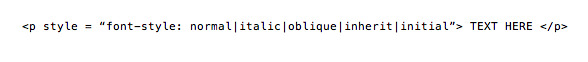

Font Presentation
Welcome to CSSCSS lets you heavily customize fonts!
the weight,
size,
style, and
font
can all be changed.up next FONT FAMILY
The font-family property allows you to specify generic families and font families . This means the typeface.
Generic families let you choose between, serif, sans-serif and monospace
You can also pick from specific font families like
times new roman or courier new
we can also do
weight.
dont worry, it wont slow down your computerLets see some examples of how to specify typeface using font-family

The style of a text can be:
normal...
italic...
oblique...
and can be written as followed in HTML:
 TEXT HERE " style = "width:588px;height:62px">
Let's talk about
font-size
It can be really big
or it can be really tiny
Let's see the syntax
p{font-size: 14px;}
p{font-size: 0.875em;}
Why are they different?
- - Absolute size
- - Relative size
Weight Example: